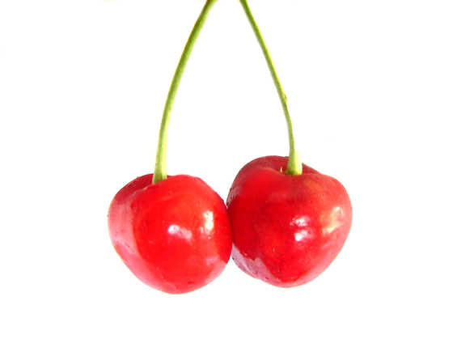

 Ture cherry friuts are borne by members of the subgenus Cerasus,which is distinguished by having the flowers in small corymbs of several together (not singly, nor in racemes), and by having a smooth fruit with only a weak groove or none along one side. the subgenus is native to the temperate regions of the northern Hemisphere. with tow specise in America, three in Europe, and the remainder in Asia. The majority of eating cherries are derived form either prunus avium, the wild cherry (sometimes called the sweet cherry), or from Prunus cerasus, the sour cherry.